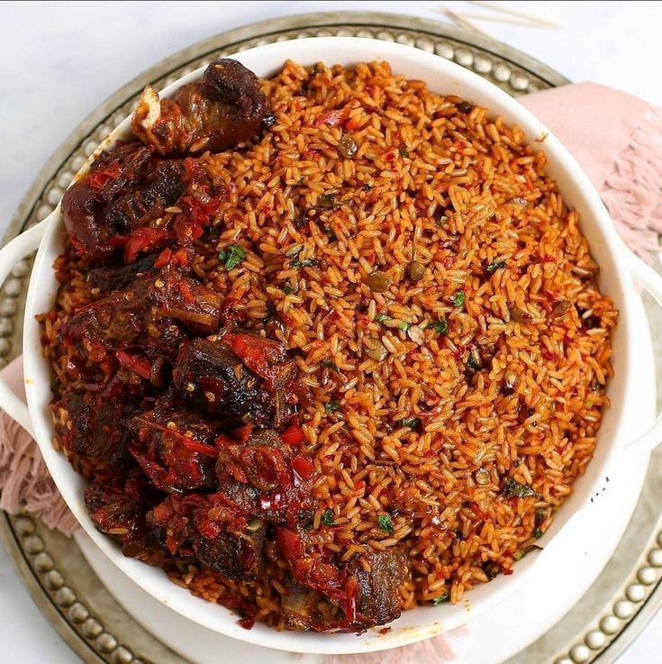

RECIPE FOR COOKING PILAU

Equipments
- 1 Cooking Pan
- 1 Wooden Spoon
- 1 Fork
- 1 Mortar and Pestle
- 1 grater A grater can also be used in the absence of a mortar and pestle
Ingredients
- 3 Cups rice Preferably pishori or long-grained rice, heaped and washed and all the water drained out of the rice
- 2 large onions sliced into small pieces
- 2 medium size tomatoes grated or skinned and cut up into small pieces
- 2 tbsps finely grated fresh garlic
- 2 tbsps finely grated fresh ginger
- 1 tsp finely grated fresh turmeric or ½ tsp turmeric powder
- 1 tbsp tomato paste
- 1 & ½ tsps pilau masala spice
- 1 & ½ tsps salt
- 10 tbsps cooking oil to fry
- 6 cups hot water -work with the cup you used to measure the rice
Instructions
- In a suitable clean pan you’re using to cook the pilau, add the salad oil and place it on the fire. Let the oil get hot; not smoking hot.
- Add the onion and fry to a golden color. Stir frequently.
- Add the garlic, ginger, and fresh turmeric. If you’re using turmeric powder, wait and add it with the pilau masala spice later. Keep stirring until the entire mixture turns a dark golden brown.
*This dark brown color is key because this is what will give your pilau the characteristic golden color of pilau without having to use a darkener. This means you'll need to ensure to fry your mixture until it looks like it’s about to burn, but don’t let it burn
- Add the tomato at this point. Stir a little, cover, and significantly lower the heat. Let the mixture simmer for a minute or two.
- Stir in the tomato paste, 2 tablespoons of dhania, and the green pepper.
Add the pilau masala and the salt and evenly stir the mixture.
Cover again for a minute, still on low heat, to allow the ingredients to blend well together.
- Next, stir in the rice and continue stirring until all the ingredients are evenly blended together.
Pour in the hot water and stir the mixture. Bring it to a boil.
Cover the pan and significantly lower the heat. Let the rice cook on this very low heat for about 20 minutes or until most of the water in the rice is gone.
- Use a fork to gently turn the rice, allowing the ingredients to mix into the rice evenly, now that they tend to collect at the top.
- Cover again and let the rice cook for another 10 or so minutes.
- Gently turn your rice again with a fork then cover. Give it another 10 minutes or until the rice is ready.
Garnish with the remaining dhania (coriander) and, or any other suitable garnish.
Feedbacks